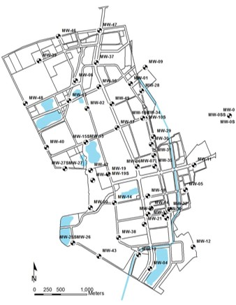
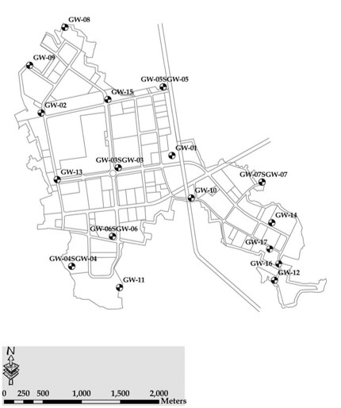

台南園區地下水井分布狀況概述
南科管理局自民國87年起陸續於台南園區設置地下水水質監測井。若以監測目的與用途分類，大致可分為以下：
1. 暫棲含水層監測井群：深度範圍約2.4～7.0公尺
2. 第一含水層監測井群：井深範圍在9.6～31.3公尺之間，平均井深約15公尺


高雄園區地下水井分布狀況概述
管理局於91年起陸續在高雄園區共設置20座監測井；高雄園區因水文地質條件與台南園區區域不盡相同，無明顯較厚之黏土層，因此監測受體以第一含水層為主，依井深分群大致可分為兩類：
1. 深度一井群：共15座監測井，井深範圍在5.6～12.4公尺之間。
2. 深度二井群：共5座監測井，井深範圍在25.2～57.6公尺之間。